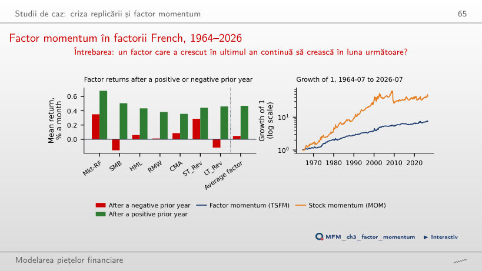

În stînga este slide-ul din curs, în dreapta aceeași figură, calculată în browser din aceleași date. Butonul ▶ modifică parametrul pas cu pas.
De la Markowitz la CAPM · Estimarea lui beta · Testarea CAPM · Modele multifactoriale · Regresii Fama–MacBeth · Factori latenți: PCA și IPCA · Investiții factoriale · Studii de caz: criza replicării și factor momentum · AI pentru descoperire științifică
De la Markowitz la CAPM
Frontiera eficientă a sectoarelor din SUA

Răspuns
Nu. Portofoliul tangent este optimizat in-sample, deci diferența trebuie evaluată statistic. Cu SPY ca reper, testul GRS pe cele nouă sectoare dă aproximativ 0,72, cu p = 0,69. Slide-urile raportează separat GRS = 0,53, cu p = 0,85, folosind Mkt-RF. Niciunul dintre aceste teste nu respinge la 5%; aceasta nu dovedește că modelul este corect. Portofoliul tangent are poziții short mari: −0,37 în XLF și −0,21 în XLB.
Estimarea lui beta
Beta ETF-ului de tehnologie (XLK) în date

Răspuns
Nu. Calculul Newey–West păstrează coeficienții OLS și schimbă matricea estimată de covarianță a acestora; nu reponderează observațiile și nu aplică shrinkage. Beta rămîne 1,277. Alfa anual estimat este 0,33%, cu t = 0,13. Intervalul bootstrap de 95%, [−5,5%; 4,9%], include zero: nu respingem alfa zero la 5%.
De ce depinde un beta estimat

Răspuns
Panta contemporană crește de la 0,77 la aproximativ 1,00. Cu tranzacționare zilnică, reacția nu mai este amînată de zile fără tranzacții. Suma Dimson este aproximativ 0,98; într-un eșantion finit nu trebuie să fie exact 1. La 75%, panta pe randamentul pieței din ziua anterioară este 0,16, iar suma Dimson 0,93.
Beta nu este constant

Răspuns
Intervalul estimărilor trece de la [−0,31; 1,49] la [0,20; 1,38]. Fereastra mai lungă netezește variația observată. Aceasta nu dovedește că beta adevărat este constant. Beta XLF variază între 0,60 și 2,17 la 252 de zile, cu maximul imediat după criza bancară din 2008–2009.
Testarea CAPM
Activele de test: 25 de portofolii mărime × B/M

Răspuns
Diferența crește de la aproximativ 9,46 la 12,00 puncte procentuale pe an: randamentele medii sînt 3,9% pentru small-growth și 13,3% pentru small-value, iar alfa CAPM −6,3% și +5,7%. Beta small-growth este aproximativ 1,42, iar beta small-value 1,06; CAPM scade o componentă de piață mai mare din randamentul small-growth. Ajustarea nu scade aceeași sumă din ambele randamente.
Dreapta pieței titlurilor (SML) în date

Răspuns
Pentru ianuarie 2003–iulie 2026, panta estimată este aproximativ +2,0% pe an, iar prima pieței este 10,7%. Semnul pantei depinde de eșantion: este −4,4% cu începutul în 1963 și −1,0% cu începutul în 2006. Din 1963, valorile beta acoperă doar intervalul 0,86–1,42, iar GRS = 4,20, cu p = 7,5 × 10−11 (rotunjit pe slide: 8 × 10−11).
Modele multifactoriale
Randamentele cumulate ale celor șase factori, 1963–2026

Răspuns
Mkt-RF ajunge la aproximativ 3,4, iar MOM la 1,0. Din iulie 1963, ordinea era inversă: MOM 48,0 și Mkt-RF 43,2. Indicii sînt calculați ca produsul termenilor (1 + randamentul lunar al factorului), pornind de la 1; nu reprezintă automat strategii investibile cu aceeași finanțare. Momentum a pierdut mult la revenirea pieței din 2009.
Regresii Fama–MacBeth
Primele de risc estimate

Răspuns
Beta de piață diferă puțin între portofolii: 0,89–1,14 în FF3. Această dispersie redusă face dificilă separarea primei de piață de termenul liber. Estimația negativă nu stabilește preferințele investitorilor pentru risc. Corecția Shanken schimbă erorile standard, nu estimația primei. Pentru HML, prima estimată (4,0%) este apropiată de media factorului (3,6%).
Factori latenți: PCA și IPCA
PCA pe ETF-urile sectoriale din SUA

Răspuns
PC1 explică 36,6%, față de 66,0% pe întregul eșantion. Standardizarea egalizează varianțele celor 11 serii de intrare, nu varianțele componentelor principale. Ponderea PC1 se recalculează din corelațiile ferestrei selectate. Pe întregul eșantion, loadings PC1 sînt toate pozitive (0,24–0,34), iar corelația PC1 cu SPY este 0,954; pe fereastra de 252 de zile este 0,723.
Investiții factoriale
ETF-urile factoriale față de piață

Răspuns
Nu. Diferența dintre CAGR-uri descrie performanța compusă realizată. Alfa CAPM este termenul liber al regresiei randamentelor în exces pe randamentul în exces al pieței. Diversificarea nu impune beta egal cu 1. Pentru o concluzie despre alfa sînt necesare estimarea și incertitudinea ei. Din iulie 2013, doar IWF și MTUM (15,5%) au CAGR peste SPY; QUAL are 13,5%, VLUE 13,1%, IWD 10,7%, USMV 10,5% și IWM 9,3%.
Studii de caz: criza replicării și factor momentum
Factor momentum în factorii French, 1964–2026

Răspuns
Nu. Alfa FF5 al lui MOM scade de la 0,74% pe lună (t = 4,18) la 0,32% (t = 2,27) cînd se adaugă TSFM, adică cu 57%. Cu șapte factori, factor momentum explică puțin peste jumătate din alfa lui MOM, iar restul rămîne semnificativ la 5%; lucrarea, cu mult mai mulți factori, explică majoritatea formelor de momentum.
AI pentru descoperire științifică
Ministudiu de caz: arbitrajul și declinul momentum-ului

Răspuns
Da. Statistica t este estimația împărțită la eroarea standard. Înjumătățirea erorii standard dublează valoarea absolută a lui t: 2,90 > 1,96. În calculul actual, t = −1,45, intervalul de 95% este [−1,05%; 0,16%] și nu respingem. Nici semnificația statistică nu ar demonstra singură că publicarea a cauzat scăderea. Scăderea reprezintă 54% din media in-sample de 0,82% pe lună, apropiată de 58% în McLean și Pontiff (2016).
ETF-uri din SUA: prețuri EODHD ajustate pentru dividende; randamentele în exces folosesc rata fără risc din Kenneth French Data Library. Factorii Fama–French, momentum, reversal și cele 25 de portofolii mărime × B/M: Kenneth French Data Library. Beta Dimson: date simulate.